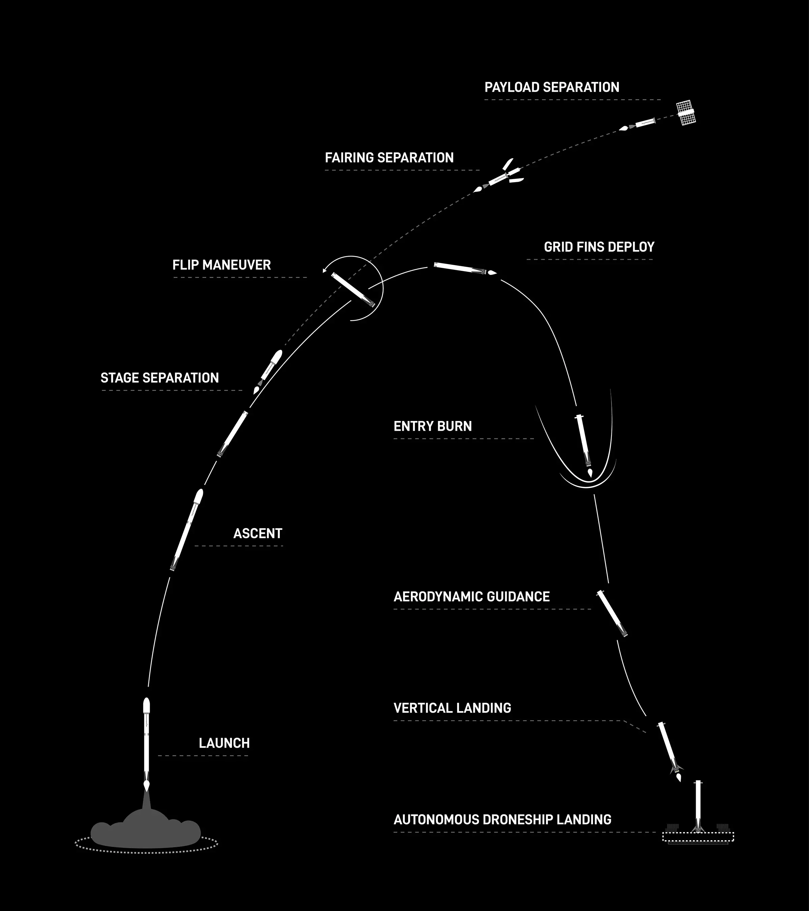
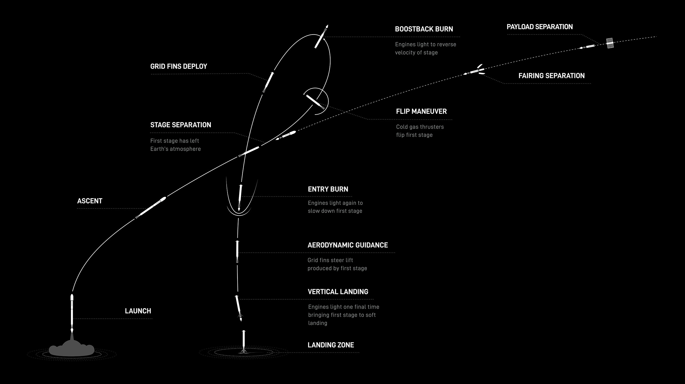

SpaceX plans to launch 22 Starlink satellites into low-Earth orbit on Sunday, November 19, using a Falcon 9 rocket from Space Launch Complex 4 East (SLC-4E) at the Californian Vandenberg Space Force Base. The planned time of liftoff is 10:33 p.m. PT, and there will be backup options till 2:30 a.m. PT on November 20th, Monday.

×
About five minutes before liftoff, X @SpaceX will start a live broadcast of this mission. Watch Live.

×
The mission's first stage booster, which has launched Sentinel-6 Michael Freilich, DART, Transporter-7, Iridium OneWeb, SDA-0B, and nine Starlink missions, is making its fifteenth flight. The first stage will land on the Of Course I Still Love You droneship, which will be positioned in the Pacific Ocean, after stage separation.
On Nov. 21, 2020, the U.S.-European oceanographic satellite Sentinel-6 Michael Freilich launched to orbit aboard a SpaceX Falcon 9 rocket. During a five-and-a-half-year prime mission, it will collect the most accurate data yet on global sea level and how our ocean is rising in response to climate change. The mission will also collect precise data of atmospheric temperature and humidity that will help improve weather forecasts and climate models.